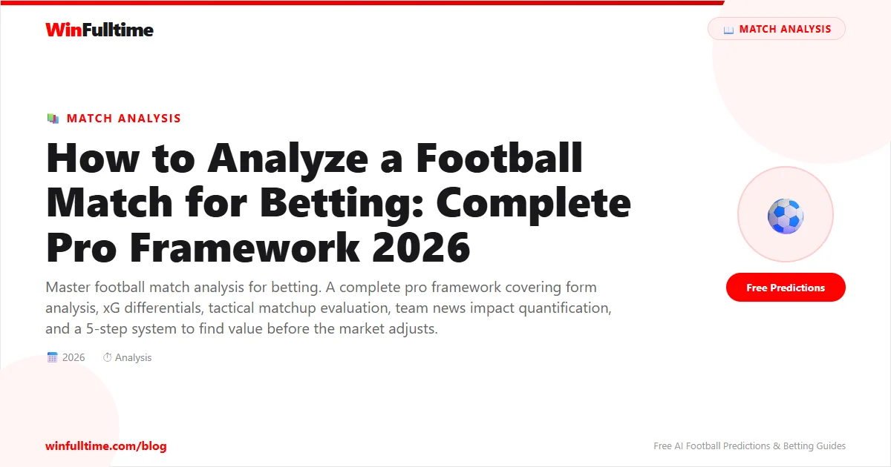

Most losing bettors do not lose because they pick the wrong team. They lose because they have no systematic process for deciding why a bet is worth placing."Arsenal are at home" is not analysis. A structured, repeatable framework that evaluates form, team news, tactics, xG data, and market pricing in a consistent order is what separates professional bettors from everyone else.
This guide provides a complete, original framework for football match analysis. It covers every factor that should inform your pre-match assessment, how to quantify each one, and how to combine them into a single probability estimate that you can compare against bookmaker odds to find genuine value.
Bookmakers use sophisticated statistical models to set odds. They have data scientists, historical databases, and market feedback loops. Against that infrastructure, an unstructured approach —"I think Liverpool will win because they're good" — has no chance.
The edge comes from finding specific situations where the bookmaker's model is wrong. These gaps exist because:
Raw results are the starting point, but they need context. A team with 4 wins in 5 looks strong, but if those wins came against teams 15th-20th in the table, the form is less impressive than a team with 3 wins against top-6 opposition.
| Level | What to Check | Why It Matters | Source |
|---|---|---|---|
| Results | W-D-L in last 6 matches | Basic momentum indicator | Any site |
| Opponent Quality | League position of opponents faced | A 5-win streak vs bottom-5 is weaker than it looks | Soccerway |
| Goal Context | Goals scored and conceded per match | Reveals whether results are fluky or deserved | FBref |
The shape of form matters as much as the results themselves:
Never look at overall form alone. Always split home and away records. Some teams are dramatically different: a team averaging 2.0 points per game at home might average 0.8 away. Check the last 5 home matches for the home team and last 5 away matches for the away team separately. This is more predictive than looking at overall form.
Assign points: 3 for a win, 1 for a draw, 0 for a loss. But weight recent matches more heavily: multiply the most recent match by 5, second most by 4, and so on. This creates a form score that reflects recency and is more predictive than an unweighted average. A team with W-W-W-W-D scores 69/75. A team with D-W-W-W-W scores 65/75 — the late draw drags them down appropriately.
Expected Goals (xG) is the single most powerful tool for match analysis because it measures performance quality rather than results. A team can win 1-0 while being outplayed (xG 0.8 vs 2.1) or lose 2-1 while dominating (xG 3.2 vs 1.1). The xG tells you which team actually performed better.
| xG Pattern | What It Means | Betting Implication |
|---|---|---|
| Goals > xG (sustained) | Team is outperforming chance quality | Regression likely — consider betting against |
| Goals < xG (sustained) | Team is underperforming chance quality | Value to back — results should improve |
| xG For high + xGA low | Genuinely dominant performances | Strong form regardless of recent results |
| xG For low + xGA high | Results are flattered by luck | Fade this team — they are due for losses |
How to use xG in match analysis:
Best free sources for xG data: FBref (broadest coverage), Understat (best visualisation, top 5 leagues), SofaScore (live xG during matches).
Player availability is one of the most underpriced factors in football betting, especially when news breaks close to kickoff. But not all absences are equal.
| Player Type | Impact of Absence | Market Reaction |
|---|---|---|
| Star striker (scores 40%+ of goals) | Team win probability drops 8-15% | Often slow to adjust unless well-publicised |
| First-choice goalkeeper | Win probability drops 5-10% | Moderate adjustment |
| Defensive midfielder / captain | Structural impact, 3-8% drop | Often underpriced |
| Starting centre-back | Goals conceded increase 20-30% | Over/under markets slow to react |
| Creative midfielder (main assister) | Chance creation drops 15-25% | Domino effect on attack |
| Backup/rotation player | Minimal impact (<2%) | Irrelevant for most markets |
Where to find team news:
Playing style interactions matter more than individual team quality. The specific tactical matchup between two teams often determines the outcome more than their league positions.
| Style | Characteristics | Vulnerable To | Example Team |
|---|---|---|---|
| Possession-based | High ball retention, patient build-up, control tempo | Organised low blocks, counter-attacks | Manchester City, Barcelona |
| Counter-attacking | Deep defence, quick transitions, exploit space | Low blocks (no space to counter into) | Leicester (2016), Atletico Madrid |
| High-pressing | Intense off-ball movement, win ball high up | Technical teams who play through press, fatigue | Liverpool (2019-22), Leeds (Bielsa) |
| Direct / Physical | Long balls, set pieces, aerial duels, second balls | Teams with strong aerial defenders, deep blocks | Burnley (Dyche), Stoke (Pulis) |
When two styles meet, the interaction creates predictable patterns:
Use WhoScored to check team"Strengths & Weaknesses" cards — they show each team's playing style tendencies, where they are strong, and where they can be exploited.
A team playing a Champions League match in Eastern Europe on Tuesday then a league match on Saturday is at a measurable disadvantage. Studies show teams playing Thursday-Sunday schedules win approximately 8-12% less often than their baseline. Midweek travel over 2,000km reduces expected performance by a further 5-8%.
How to quantify: Check each team's fixture schedule for the preceding 7 days. Count minutes played, travel distance, and opponent quality. A team playing their 3rd match in 8 days with two long-distance travels is a fade candidate.
Heavy rain reduces passing accuracy by 5-10%, favours physical teams, and reduces total goals. Strong wind disrupts long passes and makes games unpredictable. Extreme cold (<5°C) reduces running output.
Betting application: Heavy rain shifts value towards underdog and under-goals markets. Favour teams with direct, physical styles in poor weather. Back technical, passing teams in good conditions.
Some referees issue 4 yellow cards per match. Others issue 7+. For card markets, this is essential data. For match result markets, referee style has a smaller impact — but strict referees break up play more, which tends to reduce attacking flow and benefit defensive teams.
Where to check: Transfermarkt has referee statistics. Some specialist sites track booking averages per referee.
This is the hardest factor to quantify but often the most impactful:
Home teams win approximately 45% of matches across Europe's top leagues, draw 27%, and lose 28%. That is a significant baseline. But the size of home advantage varies enormously:
| Venue Type | Home Win % | Example |
|---|---|---|
| Fortress | 65-80% | Liverpool at Anfield, Atletico at Metropolitano |
| Above average | 50-60% | Most top-6 teams at home |
| Average | 40-48% | Mid-table teams in balanced leagues |
| Below average | 30-38% | Teams with poor fan support, long travel, artificial pitch |
| Negligible | 25-30% | Some neutralised derbies, teams playing away from home stadium |
Never assume home advantage. Check each team's actual home and away records over the last 12-18 months. The difference between a fortress team at home and a poor home team can be worth 20%+ in win probability.
Use SoccerSTATS for detailed home/away splits by team.
Analysis is only useful if it leads to a betting decision. The final step in every match analysis is comparing your probability estimate to the bookmaker's implied probability.
Step 1: Assign percentage probabilities to Home, Draw, and Away outcomes based on your analysis.
Step 2: Convert bookmaker odds to implied probabilities: Implied % = 1 / decimal odds.
Step 3: Account for the bookmaker's margin. True probability = implied % / total market %.
Step 4: Calculate Expected Value: EV = (your probability × decimal odds) − 1.
Step 5: Only bet if EV > 5% to account for margin of error in your probability estimate.
The odds comparison tool on OddsPortal is essential for finding the best price. A 0.10 difference in decimal odds can be the difference between value and no value.
Step 1: Current Form
Aston Villa (last 6 home): W3 D2 L1, GF 10 GA 5. Only loss to Arsenal (top of table). Scoring consistently, defence solid at home.
Man United (last 6 away): W2 D1 L3, GF 6 GA 9. Three away losses in six, conceded 9 goals. Defensive issues on the road are clear.
Weighted Form Score: Villa 58/75, United 38/75 → Villa advantage
Step 2: xG Analysis (FBref, last 6 matches)
Aston Villa: xG 1.7 per match, xGA 1.1 per match. Positive differential of +0.6. Results align with performance — sustainable form.
Man United: xG 1.3 per match, xGA 1.6 per match. Negative differential of -0.3. Underlying performance worse than results suggest.
Verdict: Villa's form is sustainably good. United's form is unsustainably OK — they are overperforming their xG.
Step 3: Team News
Villa: Full squad available. First-choice XI expected.
United: Away did not travel (injury) — removes their best defensive midfielder. Centre-back also doubtful. Two key defensive absentees.
Impact: -12% to United win probability. Market has partially adjusted but not fully.
Step 4: Tactical Matchup
Villa (home): Possession-based, attacking full-backs, create overloads wide.
United (away): Have shifted to a counter-attacking style recently but missing defensive midfield anchor. Without protection, their back line will be exposed to Villa's wide overloads.
Matchup verdict: Villa's attacking style exploits United's weakened defensive structure. Over 2.5 goals looks likely.
Step 5: External Factors
Travel: United played Thursday in Europa League (2000km travel). 3rd match in 10 days.
Motivation: Villa pushing for top 4. United mid-table, lower motivation.
Derby: Not applicable (no rivalry).
Step 6: Home Advantage
Villa home win rate: 68% over last 18 months at Villa Park. Genuine fortress.
United away win rate: 28% over last 18 months. Poor travellers.
Step 7: Probability Estimate
Villa 55% / Draw 25% / United 20%
Step 8: Market Comparison
Bookmaker odds: Villa 1.95 (implied 51.3%), Draw 3.60 (27.8%), United 3.80 (26.3%)
After removing margin (~6%): Villa 48.2%, Draw 26.1%, United 24.7%
Value Calculation:
Villa: Your 55% vs market 48.2%. EV = (0.55 × 1.95) - 1 = +7.3%. Value exists.
Also consider: Over 2.5 goals — Villa strong attack + United weakened defence + fatigue factors suggest goals.
Decision: Back Villa at 1.95 (EV +7.3%). Consider Over 2.5 goals as secondary play.
Consistency matters more than depth. Here is a time-efficient weekly routine:
Total time investment: ~2 hours per week. This is enough to cover 8-12 matches in depth and identify 3-5 genuine value bets.
Spending 90 minutes on a single match and still not deciding. If your analysis does not produce a clear edge after 20-30 minutes, there is probably no value. Move on. Not every match is bettable.
Deciding you want to back a team early and then seeking only information that supports that decision. The fix: build the case against your preferred bet before placing it. List 3 reasons why your pick might lose. If you cannot, your analysis is biased.
Overweighting the most recent result. A 4-0 win last week is exciting but it is one data point. Check the last 6-8 matches, not just the last one. A single result can be noise.
A team averaging 1.5 goals per game sounds good — until you check the league average is 2.8. Always compare team stats against league context, not in isolation. A defensive team in a high-scoring league is different from a defensive team in a low-scoring league.
You analysed the match on Thursday. On Saturday, a key player is ruled out. You place the bet anyway based on your original research. Always check for late developments — confirmed injuries an hour before kickoff can shift probabilities by 10%+.
Adding a 5th or 6th leg to an accumulator because"it increases the odds." Each additional leg multiplies the probability of losing. A 4-leg acca at Evens each has a 6.25% chance of winning. A 6-leg acca has a 1.56% chance. The marginal leg usually destroys value.
If you are not recording your probability estimates and comparing them to outcomes, you have no way to improve. Keep a spreadsheet: match, your probability, bookmaker odds, outcome. Review monthly. This is how you discover your analytical edge.
| Tool | Best For | Link |
|---|---|---|
| FBref | xG data, advanced metrics, player stats | fbref.com |
| Understat | xG visualisation, xPoints tables | understat.com |
| WhoScored | Tactical analysis, team strengths/weaknesses | whoscored.com |
| SofaScore | Live lineups, team news, push notifications | sofascore.com |
| Transfermarkt | Injuries, squad depth, manager records | transfermarkt.com |
| Soccerway | Fixtures, H2H records, league tables | soccerway.com |
| SoccerSTATS | Home/away splits, goal timing data | soccerstats.com |
| OddsPortal | Odds comparison, best price finding | oddsportal.com |
| Betfair Exchange | True market odds, matched volume data | betfair.com |
| Football-Data.co.uk | Historical CSVs for model building | football-data.co.uk |
You do not need all 10 tools. Start with FBref (xG data), WhoScored (tactical matchups), SofaScore (team news and lineups), and OddsPortal (best prices). These four cover 85% of what you need. Add others only when your analysis requires specific data your core tools do not provide.
10-15 minutes for a standard match where the picture is clear. 20-30 minutes for complex fixtures with multiple variables. If you spend 60+ minutes and still cannot decide, there is probably no clear value in the match. Move on.
Team news — specifically key player availability. A team missing their star striker or first-choice goalkeeper is a fundamentally different proposition, and this is the factor most likely to be underpriced by the market, especially when news breaks close to kickoff.
Yes. Every single one. An uninformed bet is a donation. If you do not have time to analyse a match properly, do not bet on it. Quality over quantity is the foundation of profitable betting.
Statistics are the foundation, but they do not capture context. A team's xG numbers might look strong, but if they just lost their manager and their star player is suspended, those numbers reflect a situation that no longer exists. Combine numbers with contextual factors (motivation, travel, team news).
Watching matches reveals things statistics miss: defensive shape changes, tactical adjustments, movement patterns. You do not need to watch every team, but regularly watching the leagues you bet on sharpens your analysis. Even 1-2 full matches per weekend gives you a feel for form that stats alone cannot capture.
Track everything. Keep a spreadsheet: match, your probability estimate for each outcome, the odds you took, and the result. Every month, review your accuracy. Which factors did you overweight? Which did you underweight? Your actual edge will gradually reveal itself in the data.
That is exactly what you are looking for. If your research gives a team a 50% chance but the odds imply 40%, you have found value. But first ask: what might the market know that I do not? Check team news one more time. Check for undisclosed injuries. If your analysis still holds, bet confidently.
For a simple form-based analysis, 5-8 matches per team is sufficient. For a statistical model incorporating xG, you need at least a full season (38 matches per team) to establish reliable baselines. Academic studies suggest a minimum of 200 data points for a basic Poisson model.
Over/Under goals and Both Teams to Score are structurally easier than match result betting. Why? Because goal patterns are more consistent than win/loss patterns. A fixture that produces 2+ goals in 7 of 10 matches is statistically likely to do so again. Match results have higher variance and are harder to predict consistently.
Almost never. Even with a 60% win rate on individual selections, a 4-leg accumulator has only a 12.96% chance of winning (0.6^4). Accumulators are entertainment products, not analytical vehicles. Single bets on value are the mathematically correct approach for serious bettors.
Check our free daily football predictions where our AI models incorporate form, xG, team news, and tactical analysis across 50+ leagues — the same analytical framework described in this guide, automated and updated daily.
Generate optimized accumulator combinations from today's AI-powered predictions. Set your target odds and get instant ticket suggestions.
Pro Ticket Builder →